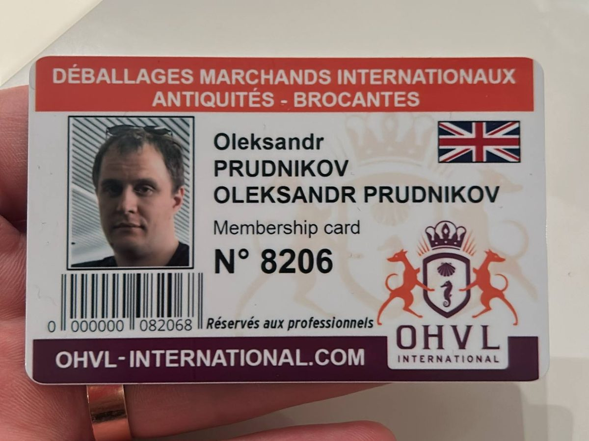
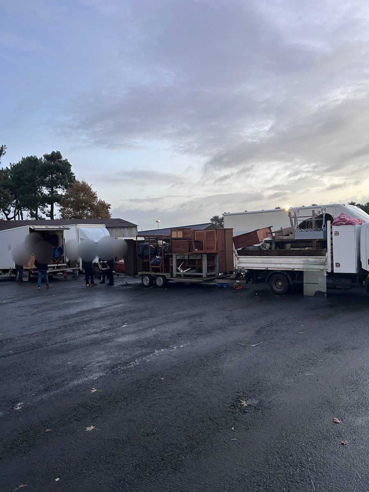
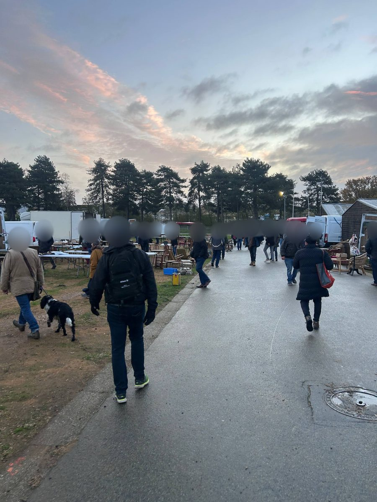
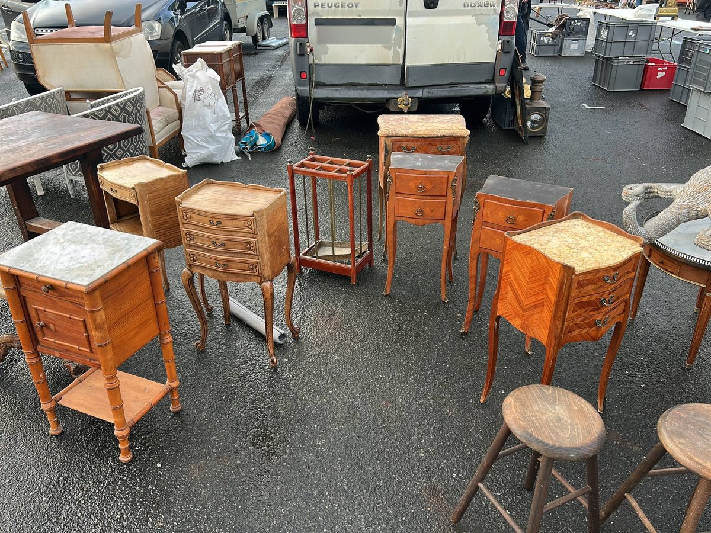
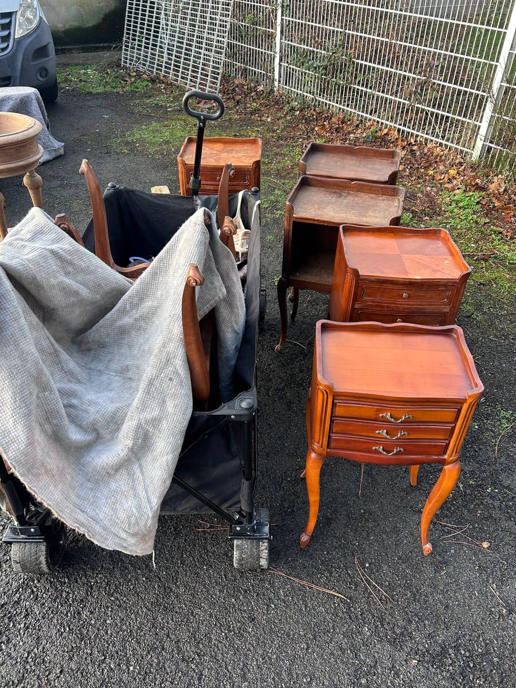
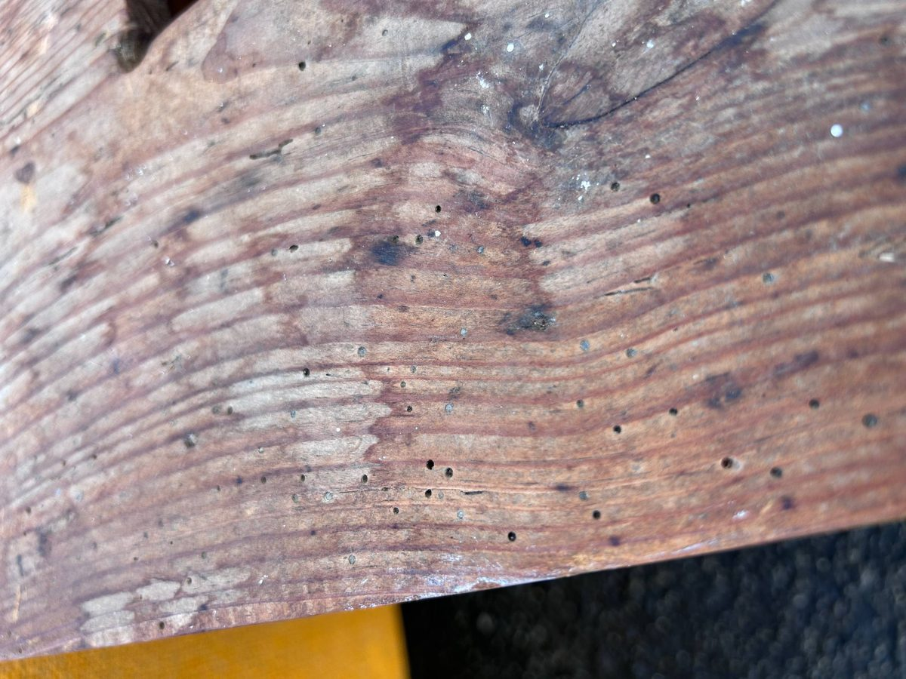

Last updated: 26 November 2026
Chartres and Le Mans Antique Fairs: Getting In Was the Easy Part
Every page about these fairs says the same thing: trade only, bring proof that you are a professional. We tried to sort that out before we left and got nowhere. In the end we drove to Chartres and Le Mans, walked in, and nobody asked for our trade documents.
On this trip to France we went to four markets. Two of them were trade-only fairs: the Déballage Marchand International de Chartres, run by OHVL, and the Déballage Marchand du Mans.
Getting in turned out to be the easy part. The hard part was the French dealers. Some of them buy every table in a trailer before you finish deciding.

The OHVL card and the paperwork nobody checked
Before the trip we tried every way to register. The online form, email, phone, WhatsApp. When someone did answer, they told us to call the office. When we called the office, nobody picked up. We paid online and still no pass arrived.
So in France we went to the organiser’s office, at the address on their website. They said: just come to the fair and show your payment at the entrance.
That is exactly what happened. The website says you need documents that prove you are a professional. We had our UK documents with us. Nobody checked them, at either fair. The staff we met spoke very little English, so a UK statement in English would not tell them much anyway.
At the fair you show the receipt for your online payment, walk in and start buying. From 9:00 the organisers sit at a table, and there you can get a trade card or renew the one you have. That is where I got mine.
We can only speak for these two fairs on this one trip. But if the registration is the thing stopping you from going, don’t let it. You can sort it out at the door.
Be there an hour before 8:00
Both fairs opened at 8:00. We were told that late arrivals wait in a queue at the entrance and miss the start. So we came an hour, an hour and a half early, and waited for the market to open.
The buying starts before the opening anyway. Dealers walk between the trailers and vans and buy what is still inside. Ask, and the seller will sell it to you.
More than once at 8:00 I saw a piece we wanted in the back of a trailer. The seller was only taking out the first things. I asked about it. Already sold, before it was even unloaded.

The professionals are your competition
We knew these were markets for professionals. It says so everywhere. We didn’t think those words meant much. They do.
We watched dealers walk up to a trailer and offer one price for all the furniture of one type in it. “I take all the tables.” They pay, and the tables are gone.
They buy in volume, so one bad piece does not hurt them. If a dealer buys 20 bedside tables and two are bad, the other 18 cover it. So they spend less time on each piece than we do.
And they decide fast. Every niche has its best sellers, and at a trade fair everybody knows a good price on them when they see one. Those go first. While you think, someone else pays.
The site is big, and the sellers set up at different times. Everybody runs from van to van. You will miss some deals, and there is nothing you can do about it.


Why each piece matters more when you are small
Our budget is in the thousands of euros, up to about €10,000. The van only holds so much. And every piece costs us time: we clean it, carry it upstairs in our house, photograph it and list it online.
A bad piece also costs reputation. Nobody wants to sell poor-quality stock.
A dealer with a big shop can bring a full van, put it all in the shop and let the customers choose. We can’t work like that. We check every piece, and that makes us slower than them.

Old woodworm holes: check before you pay
Woodworm is a beetle that lives in solid wood. It lays eggs in the wood, the larvae live inside, then they bore their way out, become beetles and fly away. They can fly into your other furniture too.
A lot of old French furniture has woodworm holes. Often it is not a problem: the piece has already been treated. The colour of the holes tells you: dark holes usually mean the beetles left a long time ago.
French sellers will tell you it is nothing. But pieces with woodworm sell for less, so not everybody is relaxed about it. And the holes do not look good.
Look at the bottom of the legs, near the floor, and at the back panels. That is where we saw most of the damage. Our guess is that the beetles come from the floors and walls of old houses. It is very easy to miss if you only look at the top and the front.

Split up when the gates open
If you go with a partner, tell them before the fair what you’re looking for. When it opens, go in different directions and send each other photos of finds in a messenger app. Then both of you have a chance to get a good piece before the dealers do. We worked like that.
And record every purchase. We log each piece in FlipperHelper and track our income and expenses. A reselling business does not work without that.
More from the trip. Click any photo to see it full size.
Frequently asked questions
Do you need a pass before you arrive at the Chartres and Le Mans trade fairs?
Not on our trip. We paid online but no pass arrived. The organiser’s office told us to come to the fair and show the payment at the entrance, and that worked at both fairs. From 9:00 the organisers sit at a table at the fair, where you can get a trade card or renew one. Nobody asked for our trade documents. Rules can change, so check the organiser’s website before you travel.
What time do the trade fairs in Chartres and Le Mans open?
Both fairs opened at 8:00 when we went. Dealers buy from vans and trailers before that. We were told that late arrivals wait in a queue at the entrance, so we arrived one to one and a half hours early.
How do you spot old woodworm holes in antique furniture?
Look for small round flight holes, most of all at the bottom of the legs and on the back panels, which are easy to miss. Dark holes usually mean old damage and no live beetles. Pieces with woodworm sell for less, so take it into account in the price.
Related reading
- Buying Furniture at the Braderie de Lille — our earlier trip, to Europe’s biggest public flea market
- Sourcing Reselling Stock from France: UK Guide to Driving, Customs & Costs
- Best French Brocantes 2026: UK Reseller Sourcing Calendar
- What Is a Brocante? UK Reseller’s Guide to French Flea Market Types
- Track Sourcing Trip Profit — work out whether each trip was actually worth it
Track your sourcing trips with FlipperHelper
Free app for iOS and Android with multi-currency support and automatic exchange rates. Log purchases in EUR, track Eurotunnel and fuel as transport expenses, and see your real profit per trip. Works offline — perfect for markets with no signal.
Download Free on the App StoreGet it Free on Google Play